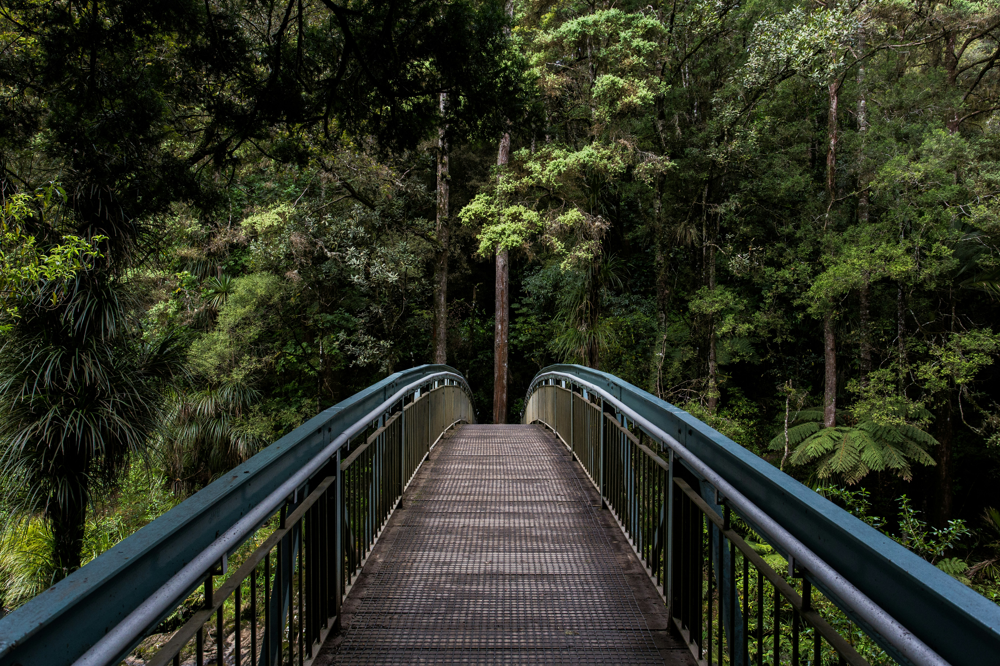
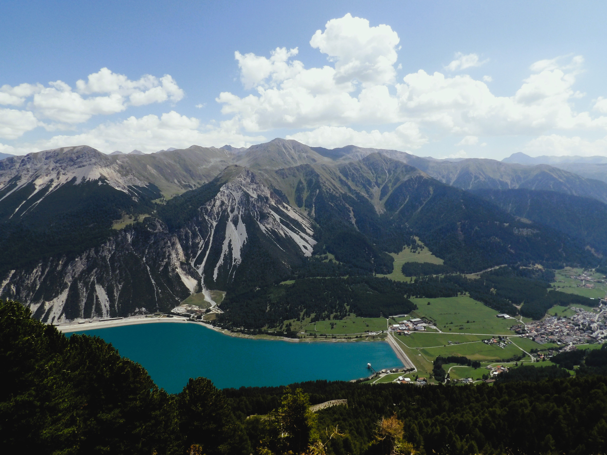
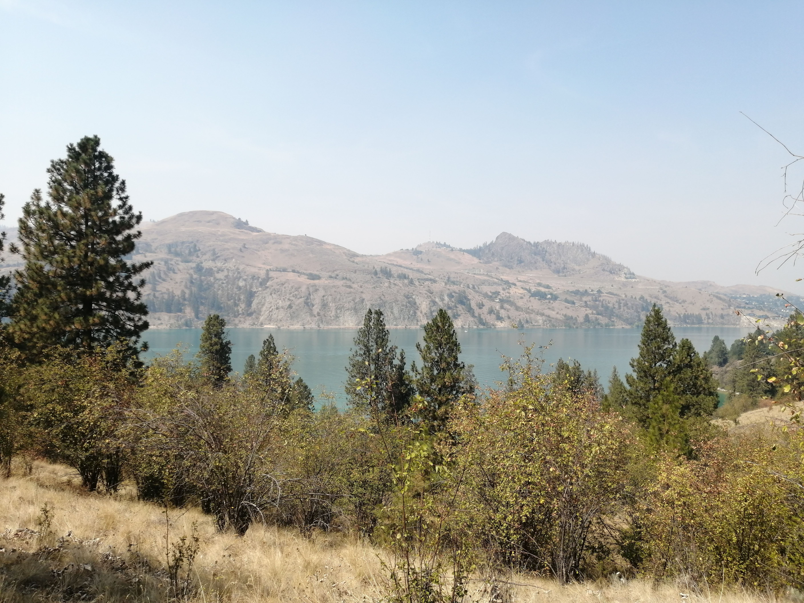
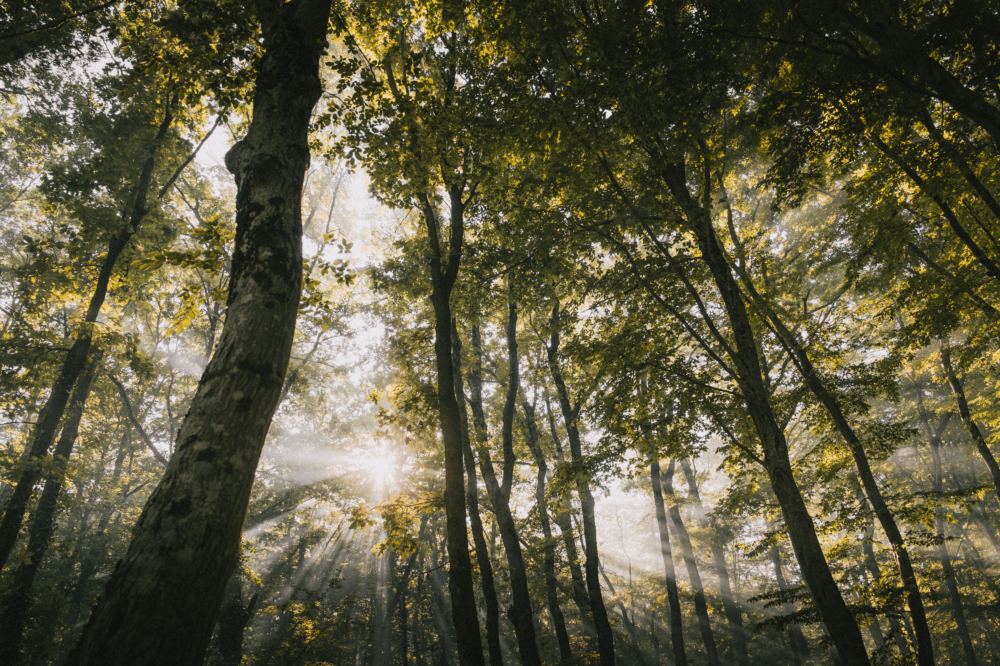
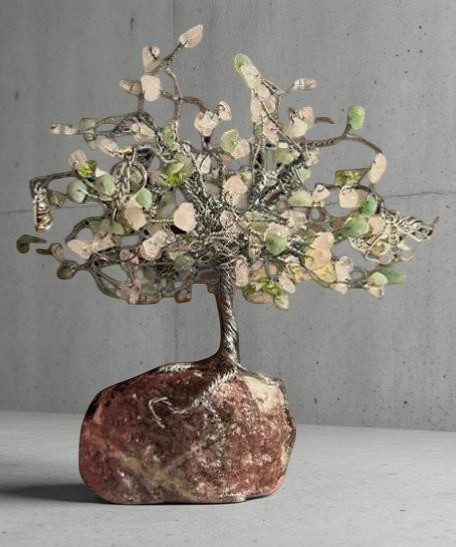

OUR STORY · CREATIVITY, CONNECTION, CONTRIBUTION
Creativity brought meback to myself.
Making. Meaning. Belonging.
SCROLL TO FOLLOW THE STORY
It started witha need.
The Meridyan began during a season of my life when I needed somewhere to put my hands, my mind, and my energy.
I started creating, not because I had a business plan, but because making things gave me a sense of purpose and belonging that I had been missing.
What inspired you to start The Meridyan?
The Meridyan began during a season of my life when I needed somewhere to put my hands, my mind, and my energy. I didn’t have a business plan. I started making things because it gave me a sense of purpose and belonging that I’d been missing.
A few pieces became crystal trees. Those trees became gifts. Gifts became orders. Orders became workshops. And somewhere along the way, The Meridyan became something much bigger than the things I was making.
Where did the name come from?
Years ago, an ex-boyfriend told me that if he ever had a daughter, he’d name her Halcyon Meridian. I fell in love with the name and told him I was stealing it.
When it came time to name my business, Meridyan felt like the obvious choice. I spelled it with a y, like my name, Kaitlyn. I also loved that a meridian is a line that runs from pole to pole. The natural world was already at the heart of what I wanted to create, so the name felt like it belonged.

Little pieces becamesomething bigger.
Eventually, a few pieces became crystal trees. Those trees became gifts. Gifts became orders. Orders became workshops. And somewhere along the way, The Meridyan became something much bigger than the things I was making.
What can people experience here?
You can come to a workshop and make something that feels like yours, or browse our collections and find a piece that speaks to you. I’m also building toward experiences that get people outside, take them on an adventure, and give them ways to give back to their communities.
The Eight Elements give you different places to start. You might feel drawn to Wildamore when you’re looking for a sense of belonging, or to Ember when you’re going through a season of change.
What do you wish more people knew about creativity?
It can start with something as simple as looking at a piece and thinking, I wonder if I could make that. Then you try. Whatever you make will have a little bit of you in it. That’s my favorite part.
At a beaded plant workshop, someone said, “I love how we all started with the same colors and beads, yet they all turned out completely different.”
I remember thinking, YES. That’s what it’s all about.

03 / WHAT IS THE MERIDYAN?
A creative space built aroundthree things.
Connection, contribution, and creation. We make things. We gather around tables. We learn from each other. We give meaningful gifts. We support people when we can. We create space for individuality without losing sight of the fact that we're all part of something bigger.
Some days that looks like a crystal tree workshop. Sometimes it's a handmade piece created for someone going through a major season of life. And as The Meridyan grows, I hope it becomes a platform for experiences, community, generosity, collaboration, and a whole lot of beautiful uniqueness.
What inspired the Eight Elements?
I wanted The Meridyan to bring people back to the natural world and help them feel more connected to themselves, to each other, and to the places around them. It made sense to start with Earth’s elements. The landscapes came naturally from there.
What do you hope people take away?
That’ll look different for everyone. Some people might find a little peace. Others might leave inspired, or realize they have more courage or strength than they thought. I hope someone looks at what they made and thinks, I did that, and feels proud of it.
If nothing else, I hope people leave with something to wonder about.

Three things wekeep coming back to.
Connection
Creating spaces where people can show up as themselves and create something alongside one another.
Contribution
We leave people, communities, and the world around us a little better than we found them.
Creation
Experimenting, learning, screwing things up, trying again, and creating something that didn't exist before.
Hi, I'm Kaitlyn.
I didn't set out to become an artist.
After leaving the corporate world in 2025, I went through one of the hardest periods of my life. For months, I felt disconnected from myself, my purpose, and unsure of what came next. Eventually, I started making things as a way to feel purposeful again. I taught myself as I went. My first crystal trees were literally glued to paper plates. They weren't exactly destined for an art museum, but making them made me feel something I hadn't felt in a while: excited.
So I kept going. I experimented. I made mistakes. I learned. People started asking if they could buy what I was creating. Then they trusted me with pieces connected to their relationships, losses, new beginnings, celebrations, and stories. That's when I realized this wasn't really about crystals or wire. It was about what we attach meaning to, and what happens when we create with intention.
My first tree!
